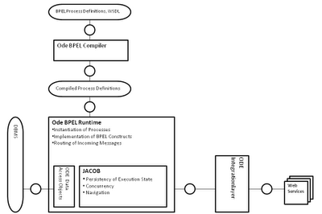

Exploring ODE Part III: architecture and modules introduction
In this blog entry, we will continue to explore the ODE source code. Typically, we should see the ODE's architecture in our first part of this series, but here I put it in the third part, as at that time, I was just trying to write a blog entry about the ODE's inner model about bpel file, didn't thought I will write this as a series.
Anyway, lets see the ODE's architecture diagram, which I copied it from the ODE's architecture wiki page.

On our first part, we look at the bpel compiler module, and we look at the JACOB framework on our second part.
In this part, we will try to make an introduction to ODE's modules:
ODE core modules
- bpel-api: It contains the api definition for ODE, some important packages are:
- org.apache.ode.bpel.iapi: this is for integration interfaces, like Axis2 module will implement it.
- org.apache.ode.bpel.rapi: these interfaces are for runtime api that are implemented in the bpel-runtime module.
- org.apache.ode.bpel.pmapi: this is for the process management.
- org.apache.ode.bpel.evt: this is for the event.
- bpel-runtimes: this module takes care of implementing the Bpel's Activities, like INVOKE, REPLY, WAIT by extending the JacobRunnable Object, also it is the place that includes the internal model for compiled Bpel file, and Channel definition. You would notice that it has v1 and v2 packages, thats for ODE 1.x and ODE 2.x respectively.
- bpel-dao: this module is the API for DAO layer, currently, it doesn't include the DAO API for process store.
- dao-jpa: currently it is the openjpa implementation for DAO.
- dao-jpa-db: This is the DDL script for openjpa's impl.
- dao-hibernate, dao-hibernate-db: these two are the Hibernate's impl for DAO, and its DDL scripts.
- bpel-schemas: this is module that use xmlbeans to generate Java objects from xsd schemas, they are: deploymentDescriptor, (dd.xsd), pmapi.xsd (Process Management API), schedules.xsd, context.xsd.
- bpel-scripts: this module is having those bpel files, it is used in bpel-compiler's test case.
- bpel-compiler: this module is to convert the bpel file into ODE internal model for compiled bpel file.
- il-common: this module is the common integration layer.
- scheduler-simple: this module is the implementation of scheduler service.
- bpel-store: this is the module takes charge of storing process from the filesystem, the artifact includes deploy.xml, .bpel, wsdl artifacts.
- engine: this is the ode engine that uses the runtimes, dao, scheduler services.
- bpel-ql: bpel query language.
JACOB framework module:
- jacob-ap
- jacob
Integration modules:
- axis2 integration: axis2, axis2-war
- jca integration: bpel-api-jca, bpel-connector, jca-ra, jca-server
- jbi integration: jbi
- extension: extensions
some leftover modules are:
- tools: this is for the bpelc, sendsoap command line.
- utils: utils for ODE project.
- tasks: this is tasks for buildr tool.
- distro: this is the module for building distro.